import rpy2
import rpy2.robjects as ro
from rpy2.robjects.vectors import FloatVector
from rpy2.robjects.packages import importr
import torch
import numpy as np
from tqdm import tqdm
import torch.nn.functional as F
from torch_geometric_temporal.nn.recurrent import GConvGRU
import matplotlib.pyplot as plt
import pandas as pd
import time
from scipy.interpolate import interp1dTry to divide train and test(GNAR fivenet)
import
class RecurrentGCN(torch.nn.Module):
def __init__(self, node_features, filters):
super(RecurrentGCN, self).__init__()
self.recurrent = GConvGRU(node_features, filters, 2)
self.linear = torch.nn.Linear(filters, 1)
def forward(self, x, edge_index, edge_weight):
h = self.recurrent(x, edge_index, edge_weight)
h = F.relu(h)
h = self.linear(h)
return hR
%load_ext rpy2.ipython%%R
library(GNAR)
library(igraph)Data
%%R
summary(fiveNet)GNARnet with 5 nodes and 10 edges
of equal length 1%%R
edges <- as.matrix(fiveNet)
data("fiveNode")%R -o fiveVTS
%R -o edges- node: 5
- time 200
edges_tensor = torch.tensor(edges)nonzero_indices = edges_tensor.nonzero()fiveNet_edge = np.array(nonzero_indices).TT = 200
N = 5 # number of Nodes
E = fiveNet_edge
V = np.array([1,2,3,4,5])
t = np.arange(0,T)
node_features = 1edge_index = torch.tensor(E)
edge_attr = torch.tensor(np.array([1,1,1,1,1,1,1,1,1,1]),dtype=torch.float32)fiveVTS.shape(200, 5)fiveVTS_train = fiveVTS[:int(len(fiveVTS)*0.8)]
fiveVTS_test = fiveVTS[int(len(fiveVTS)*0.8):]fiveVTS_train.shape, fiveVTS_test.shape((160, 5), (40, 5))Randomly Missing Values
np.random.seed(1)
seed_number1 = np.random.choice(160,80,replace=False)np.random.seed(3)
seed_number2 = np.random.choice(160,80,replace=False)np.random.seed(5)
seed_number3 = np.random.choice(160,80,replace=False)np.random.seed(7)
seed_number4 = np.random.choice(160,80,replace=False)np.random.seed(9)
seed_number5 = np.random.choice(160,80,replace=False)fiveVTS_train[seed_number1,0] = float('nan')fiveVTS_train[seed_number2,1] = float('nan')fiveVTS_train[seed_number3,2] = float('nan')fiveVTS_train[seed_number4,3] = float('nan')fiveVTS_train[seed_number5,4] = float('nan')1. Missing Value - Mean
fiveVTS_train_mean = fiveVTS_train.copy()fiveVTS_train_mean[seed_number1,0] = np.nanmean(fiveVTS_train_mean[:,0])fiveVTS_train_mean[seed_number2,1] = np.nanmean(fiveVTS_train_mean[:,1])fiveVTS_train_mean[seed_number3,2] = np.nanmean(fiveVTS_train_mean[:,2])fiveVTS_train_mean[seed_number4,3] = np.nanmean(fiveVTS_train_mean[:,3])fiveVTS_train_mean[seed_number5,4] = np.nanmean(fiveVTS_train_mean[:,4])1) ST-GCN
mean_f_fiveVTS_train = torch.tensor(fiveVTS_train_mean).reshape(160,5,1).float()mean_X_fiveVTS = mean_f_fiveVTS_train[:159,:,:]
mean_y_fiveVTS = mean_f_fiveVTS_train[1:,:,:]model = RecurrentGCN(node_features=1, filters=4)
optimizer = torch.optim.Adam(model.parameters(), lr=0.01)
model.train()
for epoch in tqdm(range(50)):
for time, (xt,yt) in enumerate(zip(mean_X_fiveVTS,mean_y_fiveVTS)):
y_hat = model(xt, edge_index, edge_attr)
cost = torch.mean((y_hat-yt)**2)
cost.backward()
optimizer.step()
optimizer.zero_grad()100%|██████████| 50/50 [00:26<00:00, 1.87it/s]plt.plot(mean_fhat_fiveVTS[:,0])
plt.plot(fiveVTS_test)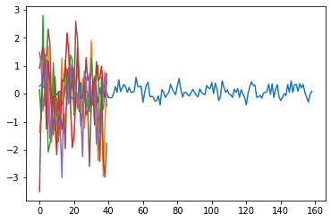
ST-GCN만 한 상태에서 true값과 비교
mean_X_fore_fiveVTS = torch.tensor(fiveVTS_train_mean[120:,:]).reshape(40,5,1).float()mean_fhat_fiveVTS = torch.stack([model(xt, edge_index, edge_attr) for xt in mean_X_fore_fiveVTS]).detach().numpy()(mean_fhat_fiveVTS.reshape(40,5)[1] - fiveVTS_test[1])array([ 0.72109859, 0.94232791, -1.24866388, -0.98387925, 0.35362056])plt.figure(figsize=(20, 8))
plt.boxplot((mean_fhat_fiveVTS.reshape(40,5) - fiveVTS_test)){'whiskers': [<matplotlib.lines.Line2D at 0x7fba3078a7c0>,
<matplotlib.lines.Line2D at 0x7fba3078aa90>,
<matplotlib.lines.Line2D at 0x7fba3079abe0>,
<matplotlib.lines.Line2D at 0x7fba3079aeb0>,
<matplotlib.lines.Line2D at 0x7fba307a7fd0>,
<matplotlib.lines.Line2D at 0x7fba307342e0>,
<matplotlib.lines.Line2D at 0x7fba30741400>,
<matplotlib.lines.Line2D at 0x7fba307416d0>,
<matplotlib.lines.Line2D at 0x7fba3074f7f0>,
<matplotlib.lines.Line2D at 0x7fba3074fac0>],
'caps': [<matplotlib.lines.Line2D at 0x7fba3078ad90>,
<matplotlib.lines.Line2D at 0x7fba3079a0a0>,
<matplotlib.lines.Line2D at 0x7fba307a71c0>,
<matplotlib.lines.Line2D at 0x7fba307a7490>,
<matplotlib.lines.Line2D at 0x7fba307345b0>,
<matplotlib.lines.Line2D at 0x7fba30734880>,
<matplotlib.lines.Line2D at 0x7fba307419a0>,
<matplotlib.lines.Line2D at 0x7fba30741c70>,
<matplotlib.lines.Line2D at 0x7fba3074fd90>,
<matplotlib.lines.Line2D at 0x7fba3075d0a0>],
'boxes': [<matplotlib.lines.Line2D at 0x7fba3078a4f0>,
<matplotlib.lines.Line2D at 0x7fba3079a910>,
<matplotlib.lines.Line2D at 0x7fba307a7d00>,
<matplotlib.lines.Line2D at 0x7fba30741130>,
<matplotlib.lines.Line2D at 0x7fba3074f520>],
'medians': [<matplotlib.lines.Line2D at 0x7fba3079a370>,
<matplotlib.lines.Line2D at 0x7fba307a7760>,
<matplotlib.lines.Line2D at 0x7fba30734b50>,
<matplotlib.lines.Line2D at 0x7fba30741f40>,
<matplotlib.lines.Line2D at 0x7fba3075d370>],
'fliers': [<matplotlib.lines.Line2D at 0x7fba3079a640>,
<matplotlib.lines.Line2D at 0x7fba307a7a30>,
<matplotlib.lines.Line2D at 0x7fba30734e20>,
<matplotlib.lines.Line2D at 0x7fba3074f250>,
<matplotlib.lines.Line2D at 0x7fba3075d640>],
'means': []}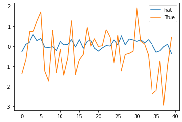
plt.figure(figsize=(20, 8))
plt.boxplot(((mean_fhat_fiveVTS.reshape(40,5) - fiveVTS_test)).reshape(200,1)){'whiskers': [<matplotlib.lines.Line2D at 0x7fba306d03d0>,
<matplotlib.lines.Line2D at 0x7fba306d06a0>],
'caps': [<matplotlib.lines.Line2D at 0x7fba306d0970>,
<matplotlib.lines.Line2D at 0x7fba306d0c40>],
'boxes': [<matplotlib.lines.Line2D at 0x7fba306d0100>],
'medians': [<matplotlib.lines.Line2D at 0x7fba306d0f10>],
'fliers': [<matplotlib.lines.Line2D at 0x7fba306de220>],
'means': []}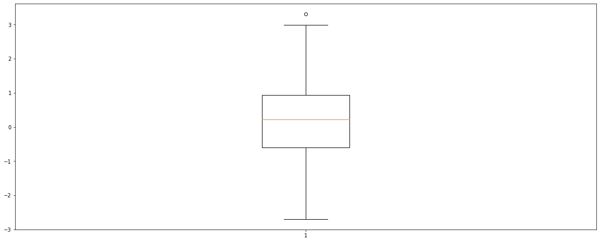
2) Temporal \(\to\) ST-GCN
mean_fhat_fiveVTS = torch.stack([model(xt, edge_index, edge_attr) for xt in mean_X_fiveVTS]).detach().numpy()w=np.zeros((N,159,159))for k in range(N):
for i in range(159):
for j in range(159):
if i==j :
w[k,i,j] = 0
elif np.abs(i-j) <= 1 :
w[k,i,j] = 1d = np.array([w[i].sum(axis=1) for i in range(N)])
D= np.array([np.diag(d[i]) for i in range(N)])
L = np.array([np.diag(1/np.sqrt(d[i])) @ (D[i]-w[i]) @ np.diag(1/np.sqrt(d[i])) for i in range(N)])
lamb, Psi = np.linalg.eigh(L)[0],np.linalg.eigh(L)[1]
Lamb = np.array([np.diag(lamb[i]) for i in range(N)])
fhatbar = np.hstack([Psi[i] @ mean_fhat_fiveVTS[:,i] for i in range(N)])
_fhatbar = fhatbar.reshape(N,159)
power = _fhatbar**2
ebayesthresh = importr('EbayesThresh').ebayesthresh
power_threshed=np.array([np.array(ebayesthresh(FloatVector(_fhatbar[i]**2))) for i in range(N)])
fhatbar_threshed = np.where(power_threshed>0,_fhatbar,0)
fhatbarhat = np.array([Psi[i] @ fhatbar_threshed[i] for i in range(N)])
fhatbarhat_mean_temporal = fhatbarhat.reshape(159,-1)ST-GCN만 한 상태에서 true값과 비교
mean_temporal = torch.tensor(fhatbarhat_mean_temporal).reshape(159,5,1).float()mean_X_temporal = mean_temporal[:158,:,:]
mean_y_temporal = mean_temporal[1:,:,:]model = RecurrentGCN(node_features=1, filters=4)
optimizer = torch.optim.Adam(model.parameters(), lr=0.01)
model.train()
for epoch in tqdm(range(50)):
for time, (xt,yt) in enumerate(zip(mean_X_temporal,mean_y_temporal)):
y_hat = model(xt, edge_index, edge_attr)
cost = torch.mean((y_hat-yt)**2)
cost.backward()
optimizer.step()
optimizer.zero_grad()100%|██████████| 50/50 [00:26<00:00, 1.88it/s]mean_X_temporal_fore = mean_temporal[119:,:,:]mean_fhat_temporal = torch.stack([model(xt, edge_index, edge_attr) for xt in mean_X_temporal_fore]).detach().numpy()(mean_fhat_temporal.reshape(40,5)[1] - fiveVTS_test[1])array([ 0.76215137, 0.92118497, -1.27401298, -1.01342119, 0.3446341 ])plt.figure(figsize=(20, 8))
plt.boxplot((mean_fhat_temporal.reshape(40,5) - fiveVTS_test)){'whiskers': [<matplotlib.lines.Line2D at 0x7fba3066f040>,
<matplotlib.lines.Line2D at 0x7fba3066f310>,
<matplotlib.lines.Line2D at 0x7fba305fc430>,
<matplotlib.lines.Line2D at 0x7fba305fc700>,
<matplotlib.lines.Line2D at 0x7fba3060b610>,
<matplotlib.lines.Line2D at 0x7fba3060b8e0>,
<matplotlib.lines.Line2D at 0x7fba30616a00>,
<matplotlib.lines.Line2D at 0x7fba30616cd0>,
<matplotlib.lines.Line2D at 0x7fba30623df0>,
<matplotlib.lines.Line2D at 0x7fba30630100>],
'caps': [<matplotlib.lines.Line2D at 0x7fba3066f5e0>,
<matplotlib.lines.Line2D at 0x7fba3066f8b0>,
<matplotlib.lines.Line2D at 0x7fba305fc9d0>,
<matplotlib.lines.Line2D at 0x7fba305fcca0>,
<matplotlib.lines.Line2D at 0x7fba3060bbb0>,
<matplotlib.lines.Line2D at 0x7fba3060be80>,
<matplotlib.lines.Line2D at 0x7fba30616fa0>,
<matplotlib.lines.Line2D at 0x7fba306232b0>,
<matplotlib.lines.Line2D at 0x7fba306303d0>,
<matplotlib.lines.Line2D at 0x7fba306306a0>],
'boxes': [<matplotlib.lines.Line2D at 0x7fba3065fe50>,
<matplotlib.lines.Line2D at 0x7fba305fc160>,
<matplotlib.lines.Line2D at 0x7fba3060b340>,
<matplotlib.lines.Line2D at 0x7fba30616730>,
<matplotlib.lines.Line2D at 0x7fba30623b20>],
'medians': [<matplotlib.lines.Line2D at 0x7fba3066fb80>,
<matplotlib.lines.Line2D at 0x7fba3ed4f700>,
<matplotlib.lines.Line2D at 0x7fba30616190>,
<matplotlib.lines.Line2D at 0x7fba30623580>,
<matplotlib.lines.Line2D at 0x7fba30630970>],
'fliers': [<matplotlib.lines.Line2D at 0x7fba3066fe50>,
<matplotlib.lines.Line2D at 0x7fba3060b070>,
<matplotlib.lines.Line2D at 0x7fba30616460>,
<matplotlib.lines.Line2D at 0x7fba30623850>,
<matplotlib.lines.Line2D at 0x7fba30630c40>],
'means': []}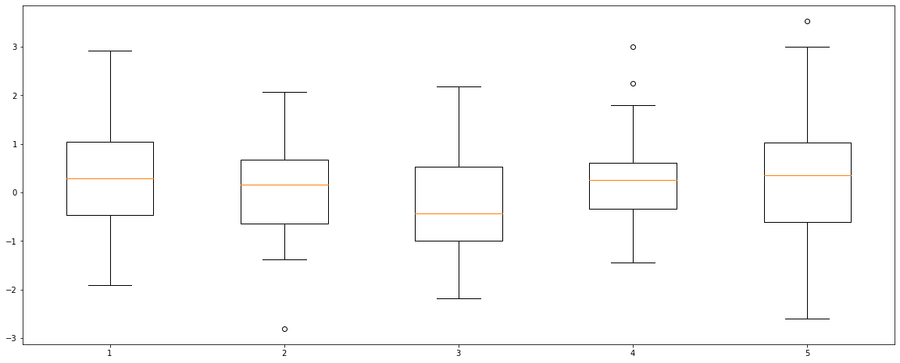
plt.figure(figsize=(20, 8))
plt.boxplot(((mean_fhat_temporal.reshape(40,5) - fiveVTS_test)).reshape(200,1)){'whiskers': [<matplotlib.lines.Line2D at 0x7fba30596eb0>,
<matplotlib.lines.Line2D at 0x7fba305a51c0>],
'caps': [<matplotlib.lines.Line2D at 0x7fba305a5490>,
<matplotlib.lines.Line2D at 0x7fba305a5760>],
'boxes': [<matplotlib.lines.Line2D at 0x7fba30596cd0>],
'medians': [<matplotlib.lines.Line2D at 0x7fba305a5a30>],
'fliers': [<matplotlib.lines.Line2D at 0x7fba305a5d00>],
'means': []}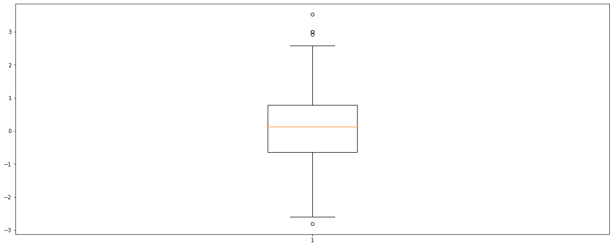
3) Spatio \(\to\) ST-GCN
w=np.zeros((N,N))for i in range(N):
for j in range(N):
if i==j :
w[i,j] = 0
elif np.abs(i-j) <= 1 :
w[i,j] = 1d = np.array(w.sum(axis=1))
D = np.diag(d)
L = np.array(np.diag(1/np.sqrt(d)) @ (D-w) @ np.diag(1/np.sqrt(d)))
lamb, Psi = np.linalg.eigh(L)
Lamb = np.diag(lamb)
fhatbar = Psi @ mean_fhat_fiveVTS.reshape(N,159)
power = fhatbar**2
ebayesthresh = importr('EbayesThresh').ebayesthresh
power_threshed=np.array([np.array(ebayesthresh(FloatVector(fhatbar[i]**2))) for i in range(N)])
fhatbar_threshed = np.where(power_threshed>0,fhatbar,0)
fhatbarhat = Psi @ fhatbar_threshed
fhatbarhat_mean_spatio = fhatbarhat.reshape(159,-1)ST-GCN만 한 상태에서 true값과 비교
mean_spatio = torch.tensor(fhatbarhat_mean_spatio).reshape(159,5,1).float()mean_X_spatio = mean_spatio[:158,:,:]
mean_y_spatio = mean_spatio[1:,:,:]model = RecurrentGCN(node_features=1, filters=4)
optimizer = torch.optim.Adam(model.parameters(), lr=0.01)
model.train()
for epoch in tqdm(range(50)):
for time, (xt,yt) in enumerate(zip(mean_X_spatio,mean_y_spatio)):
y_hat = model(xt, edge_index, edge_attr)
cost = torch.mean((y_hat-yt)**2)
cost.backward()
optimizer.step()
optimizer.zero_grad()100%|██████████| 50/50 [00:27<00:00, 1.85it/s]mean_X_spatio_fore = mean_spatio[119:,:,:]mean_fhat_spatio = torch.stack([model(xt, edge_index, edge_attr) for xt in mean_X_spatio_fore]).detach().numpy()(mean_fhat_spatio.reshape(40,5)[1] - fiveVTS_test[1])array([ 0.61463491, 0.76944418, -1.41762615, -1.1639043 , 0.24719958])plt.figure(figsize=(20, 8))
plt.boxplot((mean_fhat_spatio.reshape(40,5) - fiveVTS_test)){'whiskers': [<matplotlib.lines.Line2D at 0x7fba3052a940>,
<matplotlib.lines.Line2D at 0x7fba3052ac10>,
<matplotlib.lines.Line2D at 0x7fba30278d60>,
<matplotlib.lines.Line2D at 0x7fba30284070>,
<matplotlib.lines.Line2D at 0x7fba302931c0>,
<matplotlib.lines.Line2D at 0x7fba30293490>,
<matplotlib.lines.Line2D at 0x7fba3029f5b0>,
<matplotlib.lines.Line2D at 0x7fba3029f880>,
<matplotlib.lines.Line2D at 0x7fba302ad9a0>,
<matplotlib.lines.Line2D at 0x7fba302adc70>],
'caps': [<matplotlib.lines.Line2D at 0x7fba3052aee0>,
<matplotlib.lines.Line2D at 0x7fba302781f0>,
<matplotlib.lines.Line2D at 0x7fba30284340>,
<matplotlib.lines.Line2D at 0x7fba30284610>,
<matplotlib.lines.Line2D at 0x7fba30293760>,
<matplotlib.lines.Line2D at 0x7fba30293a30>,
<matplotlib.lines.Line2D at 0x7fba3029fb50>,
<matplotlib.lines.Line2D at 0x7fba3029fe20>,
<matplotlib.lines.Line2D at 0x7fba302adf40>,
<matplotlib.lines.Line2D at 0x7fba30238250>],
'boxes': [<matplotlib.lines.Line2D at 0x7fba3052a670>,
<matplotlib.lines.Line2D at 0x7fba30278a60>,
<matplotlib.lines.Line2D at 0x7fba30284eb0>,
<matplotlib.lines.Line2D at 0x7fba3029f2e0>,
<matplotlib.lines.Line2D at 0x7fba302ad6d0>],
'medians': [<matplotlib.lines.Line2D at 0x7fba302784c0>,
<matplotlib.lines.Line2D at 0x7fba302848e0>,
<matplotlib.lines.Line2D at 0x7fba30293d00>,
<matplotlib.lines.Line2D at 0x7fba302ad130>,
<matplotlib.lines.Line2D at 0x7fba30238520>],
'fliers': [<matplotlib.lines.Line2D at 0x7fba30278790>,
<matplotlib.lines.Line2D at 0x7fba30284be0>,
<matplotlib.lines.Line2D at 0x7fba30293fd0>,
<matplotlib.lines.Line2D at 0x7fba302ad400>,
<matplotlib.lines.Line2D at 0x7fba302387f0>],
'means': []}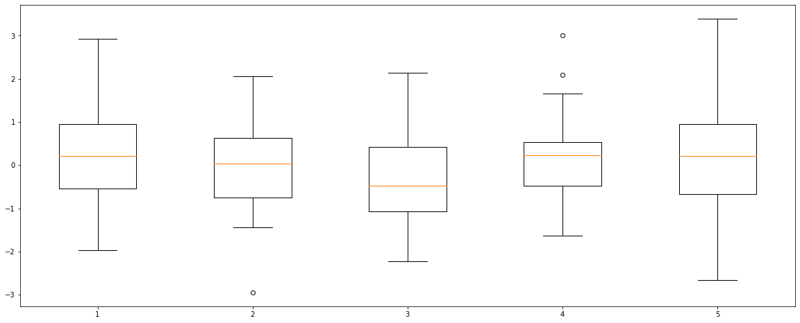
plt.figure(figsize=(20, 8))
plt.boxplot(((mean_fhat_spatio.reshape(40,5) - fiveVTS_test)).reshape(200,1)){'whiskers': [<matplotlib.lines.Line2D at 0x7fba3021ee50>,
<matplotlib.lines.Line2D at 0x7fba3022e160>],
'caps': [<matplotlib.lines.Line2D at 0x7fba3022e430>,
<matplotlib.lines.Line2D at 0x7fba3022e730>],
'boxes': [<matplotlib.lines.Line2D at 0x7fba3020f9d0>],
'medians': [<matplotlib.lines.Line2D at 0x7fba3022ea00>],
'fliers': [<matplotlib.lines.Line2D at 0x7fba3022ecd0>],
'means': []}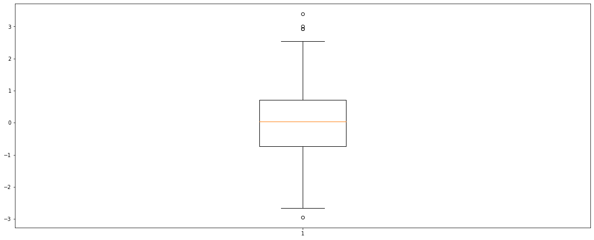
4) Spatio-Temporal \(\to\) ST-GCN
w=np.zeros((159*N,159*N))for i in range(159*N):
for j in range(159*N):
if i==j :
w[i,j] = 0
elif np.abs(i-j) <= 1 :
w[i,j] = 1d = np.array(w.sum(axis=1))
D = np.diag(d)
L = np.array(np.diag(1/np.sqrt(d)) @ (D-w) @ np.diag(1/np.sqrt(d)))
lamb, Psi = np.linalg.eigh(L)
Lamb = np.diag(lamb)
fhatbar = Psi @ mean_fhat_fiveVTS.reshape(159*N,1)
power = fhatbar**2
ebayesthresh = importr('EbayesThresh').ebayesthresh
power_threshed=np.array([np.array(ebayesthresh(FloatVector(fhatbar[i]**2))) for i in range(159*N)])
fhatbar_threshed = np.where(power_threshed>0,fhatbar,0)
fhatbarhat = Psi @ fhatbar_threshed
fhatbarhat_mean_spatio_temporal = fhatbarhat.reshape(159,N,1)ST-GCN만 한 상태에서 true값과 비교
mean_spatio_temporal = torch.tensor(fhatbarhat_mean_spatio_temporal).reshape(159,5,1).float()mean_X_spatio_temporal = mean_spatio_temporal[:158,:,:]
mean_y_spatio_temporal = mean_spatio_temporal[1:,:,:]model = RecurrentGCN(node_features=1, filters=4)
optimizer = torch.optim.Adam(model.parameters(), lr=0.01)
model.train()
for epoch in tqdm(range(50)):
for time, (xt,yt) in enumerate(zip(mean_X_spatio_temporal,mean_y_spatio_temporal)):
y_hat = model(xt, edge_index, edge_attr)
cost = torch.mean((y_hat-yt)**2)
cost.backward()
optimizer.step()
optimizer.zero_grad()100%|██████████| 50/50 [00:27<00:00, 1.84it/s]mean_X_spatio_temporal_fore = mean_spatio_temporal[119:,:,:]mean_fhat_spatio_temporal = torch.stack([model(xt, edge_index, edge_attr) for xt in mean_X_spatio_temporal_fore]).detach().numpy()(mean_fhat_spatio_temporal.reshape(40,5)[1] - fiveVTS_test[1])array([ 0.71870126, 0.94757683, -1.25974104, -0.9921751 , 0.36159626])plt.figure(figsize=(20, 8))
plt.boxplot((mean_fhat_spatio_temporal.reshape(40,5) - fiveVTS_test)){'whiskers': [<matplotlib.lines.Line2D at 0x7fba3013e070>,
<matplotlib.lines.Line2D at 0x7fba3013e340>,
<matplotlib.lines.Line2D at 0x7fba30149490>,
<matplotlib.lines.Line2D at 0x7fba30149760>,
<matplotlib.lines.Line2D at 0x7fba30157880>,
<matplotlib.lines.Line2D at 0x7fba30157b50>,
<matplotlib.lines.Line2D at 0x7fba30165c70>,
<matplotlib.lines.Line2D at 0x7fba30165f40>,
<matplotlib.lines.Line2D at 0x7fba300ff0a0>,
<matplotlib.lines.Line2D at 0x7fba300ff370>],
'caps': [<matplotlib.lines.Line2D at 0x7fba3013e610>,
<matplotlib.lines.Line2D at 0x7fba3013e910>,
<matplotlib.lines.Line2D at 0x7fba30149a30>,
<matplotlib.lines.Line2D at 0x7fba30149d00>,
<matplotlib.lines.Line2D at 0x7fba30157e20>,
<matplotlib.lines.Line2D at 0x7fba30165130>,
<matplotlib.lines.Line2D at 0x7fba3016f250>,
<matplotlib.lines.Line2D at 0x7fba3016f520>,
<matplotlib.lines.Line2D at 0x7fba300ff640>,
<matplotlib.lines.Line2D at 0x7fba300ff910>],
'boxes': [<matplotlib.lines.Line2D at 0x7fba301c4160>,
<matplotlib.lines.Line2D at 0x7fba301491c0>,
<matplotlib.lines.Line2D at 0x7fba301575b0>,
<matplotlib.lines.Line2D at 0x7fba301659a0>,
<matplotlib.lines.Line2D at 0x7fba3016fd90>],
'medians': [<matplotlib.lines.Line2D at 0x7fba3013ebe0>,
<matplotlib.lines.Line2D at 0x7fba30149fd0>,
<matplotlib.lines.Line2D at 0x7fba30165400>,
<matplotlib.lines.Line2D at 0x7fba3016f7f0>,
<matplotlib.lines.Line2D at 0x7fba300ffbe0>],
'fliers': [<matplotlib.lines.Line2D at 0x7fba3013eeb0>,
<matplotlib.lines.Line2D at 0x7fba301572e0>,
<matplotlib.lines.Line2D at 0x7fba301656d0>,
<matplotlib.lines.Line2D at 0x7fba3016fac0>,
<matplotlib.lines.Line2D at 0x7fba300ffeb0>],
'means': []}
plt.figure(figsize=(20, 8))
plt.boxplot(((mean_fhat_spatio_temporal.reshape(40,5) - fiveVTS_test)).reshape(200,1)){'whiskers': [<matplotlib.lines.Line2D at 0x7fba300f08b0>,
<matplotlib.lines.Line2D at 0x7fba300f0b80>],
'caps': [<matplotlib.lines.Line2D at 0x7fba300f0e50>,
<matplotlib.lines.Line2D at 0x7fba3007c160>],
'boxes': [<matplotlib.lines.Line2D at 0x7fba300e3400>],
'medians': [<matplotlib.lines.Line2D at 0x7fba3007c430>],
'fliers': [<matplotlib.lines.Line2D at 0x7fba3007c700>],
'means': []}
2. Missing Value - Linear Interpolation
_df = pd.DataFrame(fiveVTS_train)
_df.interpolate(method='linear', inplace=True)
_df = _df.fillna(0)linear_fiveVTS_train = np.array(_df).reshape(160,5)1) ST-GCN
linear_f_fiveVTS_train = torch.tensor(linear_fiveVTS_train).reshape(160,5,1).float()linear_X_fiveVTS = linear_f_fiveVTS_train[:159,:,:]
linear_y_fiveVTS = linear_f_fiveVTS_train[1:,:,:]model = RecurrentGCN(node_features=1, filters=4)
optimizer = torch.optim.Adam(model.parameters(), lr=0.01)
model.train()
for epoch in tqdm(range(50)):
for time, (xt,yt) in enumerate(zip(linear_X_fiveVTS,linear_y_fiveVTS)):
y_hat = model(xt, edge_index, edge_attr)
cost = torch.mean((y_hat-yt)**2)
cost.backward()
optimizer.step()
optimizer.zero_grad()100%|██████████| 50/50 [00:27<00:00, 1.82it/s]ST-GCN만 한 상태에서 true값과 비교
linear_X_fore_fiveVTS = linear_f_fiveVTS_train[120:,:,:]linear_fhat_fiveVTS = torch.stack([model(xt, edge_index, edge_attr) for xt in linear_X_fore_fiveVTS]).detach().numpy()(linear_fhat_fiveVTS.reshape(40,5)[1] - fiveVTS_test[1])array([ 0.5884296 , 0.93915328, -0.86353006, -0.32309763, 0.81814396])plt.figure(figsize=(20, 8))
plt.boxplot((linear_fhat_fiveVTS.reshape(40,5) - fiveVTS_test)){'whiskers': [<matplotlib.lines.Line2D at 0x7fba283d1100>,
<matplotlib.lines.Line2D at 0x7fba283d1400>,
<matplotlib.lines.Line2D at 0x7fba283dd550>,
<matplotlib.lines.Line2D at 0x7fba283dd820>,
<matplotlib.lines.Line2D at 0x7fba28369940>,
<matplotlib.lines.Line2D at 0x7fba28369c10>,
<matplotlib.lines.Line2D at 0x7fba28376d30>,
<matplotlib.lines.Line2D at 0x7fba28386040>,
<matplotlib.lines.Line2D at 0x7fba28392160>,
<matplotlib.lines.Line2D at 0x7fba28392430>],
'caps': [<matplotlib.lines.Line2D at 0x7fba283d16d0>,
<matplotlib.lines.Line2D at 0x7fba283d19a0>,
<matplotlib.lines.Line2D at 0x7fba283ddaf0>,
<matplotlib.lines.Line2D at 0x7fba283dddc0>,
<matplotlib.lines.Line2D at 0x7fba28369ee0>,
<matplotlib.lines.Line2D at 0x7fba283761f0>,
<matplotlib.lines.Line2D at 0x7fba28386310>,
<matplotlib.lines.Line2D at 0x7fba283865e0>,
<matplotlib.lines.Line2D at 0x7fba28392700>,
<matplotlib.lines.Line2D at 0x7fba283929d0>],
'boxes': [<matplotlib.lines.Line2D at 0x7fba283c0df0>,
<matplotlib.lines.Line2D at 0x7fba283dd280>,
<matplotlib.lines.Line2D at 0x7fba28369670>,
<matplotlib.lines.Line2D at 0x7fba28376a60>,
<matplotlib.lines.Line2D at 0x7fba28386e50>],
'medians': [<matplotlib.lines.Line2D at 0x7fba283d1c70>,
<matplotlib.lines.Line2D at 0x7fba283690d0>,
<matplotlib.lines.Line2D at 0x7fba283764c0>,
<matplotlib.lines.Line2D at 0x7fba283868b0>,
<matplotlib.lines.Line2D at 0x7fba28392ca0>],
'fliers': [<matplotlib.lines.Line2D at 0x7fba283d1f40>,
<matplotlib.lines.Line2D at 0x7fba283693a0>,
<matplotlib.lines.Line2D at 0x7fba28376790>,
<matplotlib.lines.Line2D at 0x7fba28386b80>,
<matplotlib.lines.Line2D at 0x7fba28392f70>],
'means': []}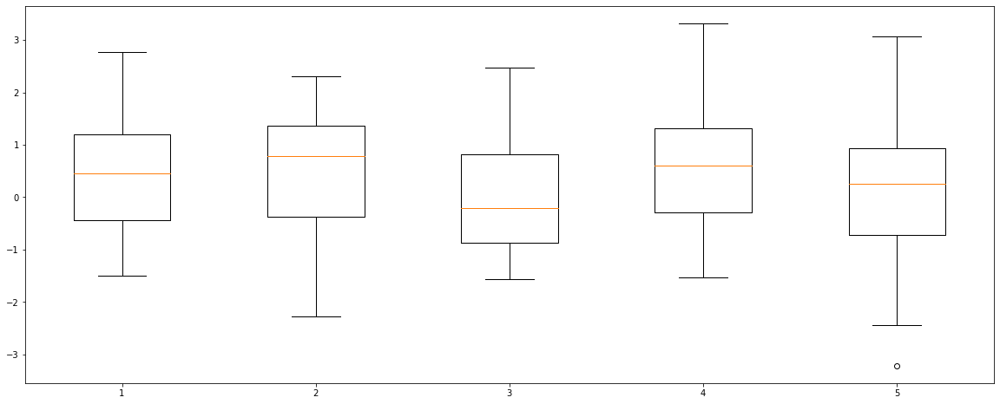
plt.figure(figsize=(20, 8))
plt.boxplot(((linear_fhat_fiveVTS.reshape(40,5) - fiveVTS_test)).reshape(200,1)){'whiskers': [<matplotlib.lines.Line2D at 0x7fba28304760>,
<matplotlib.lines.Line2D at 0x7fba28304a30>],
'caps': [<matplotlib.lines.Line2D at 0x7fba28304d00>,
<matplotlib.lines.Line2D at 0x7fba28304fd0>],
'boxes': [<matplotlib.lines.Line2D at 0x7fba282f82b0>],
'medians': [<matplotlib.lines.Line2D at 0x7fba283112e0>],
'fliers': [<matplotlib.lines.Line2D at 0x7fba283115b0>],
'means': []}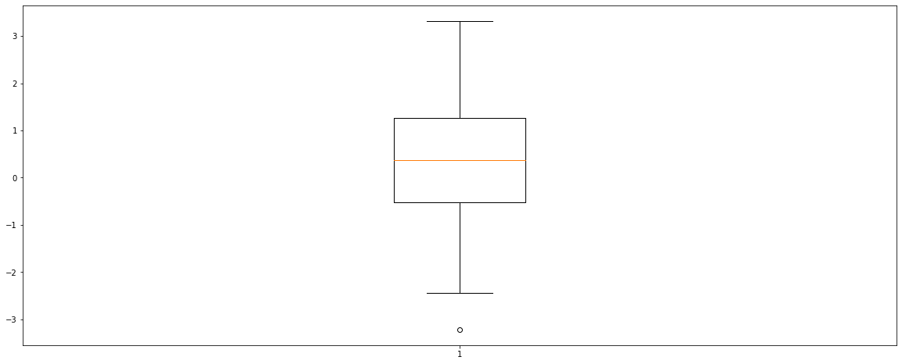
2) Temporal \(\to\) ST-GCN
linear_fhat_fiveVTS = torch.stack([model(xt, edge_index, edge_attr) for xt in linear_X_fiveVTS]).detach().numpy()w=np.zeros((N,159,159))for k in range(N):
for i in range(159):
for j in range(159):
if i==j :
w[k,i,j] = 0
elif np.abs(i-j) <= 1 :
w[k,i,j] = 1d = np.array([w[i].sum(axis=1) for i in range(N)])
D= np.array([np.diag(d[i]) for i in range(N)])
L = np.array([np.diag(1/np.sqrt(d[i])) @ (D[i]-w[i]) @ np.diag(1/np.sqrt(d[i])) for i in range(N)])
lamb, Psi = np.linalg.eigh(L)[0],np.linalg.eigh(L)[1]
Lamb = np.array([np.diag(lamb[i]) for i in range(N)])
fhatbar = np.hstack([Psi[i] @ linear_fhat_fiveVTS[:,i] for i in range(N)])
_fhatbar = fhatbar.reshape(N,159)
power = _fhatbar**2
ebayesthresh = importr('EbayesThresh').ebayesthresh
power_threshed=np.array([np.array(ebayesthresh(FloatVector(_fhatbar[i]**2))) for i in range(N)])
fhatbar_threshed = np.where(power_threshed>0,_fhatbar,0)
fhatbarhat = np.array([Psi[i] @ fhatbar_threshed[i] for i in range(N)])
fhatbarhat_linear_temporal = fhatbarhat.reshape(159,-1)ST-GCN만 한 상태에서 true값과 비교
linear_temporal = torch.tensor(fhatbarhat_linear_temporal).reshape(159,5,1).float()linear_X_temporal = linear_temporal[:158,:,:]
linear_y_temporal = linear_temporal[1:,:,:]model = RecurrentGCN(node_features=1, filters=4)
optimizer = torch.optim.Adam(model.parameters(), lr=0.01)
model.train()
for epoch in tqdm(range(50)):
for time, (xt,yt) in enumerate(zip(linear_X_temporal,linear_y_temporal)):
y_hat = model(xt, edge_index, edge_attr)
cost = torch.mean((y_hat-yt)**2)
cost.backward()
optimizer.step()
optimizer.zero_grad()100%|██████████| 50/50 [00:27<00:00, 1.85it/s]linear_X_temporal_fore = linear_temporal[119:,:,:]linear_fhat_temporal = torch.stack([model(xt, edge_index, edge_attr) for xt in linear_X_temporal_fore]).detach().numpy()(linear_fhat_temporal.reshape(40,5)[1] - fiveVTS_test[1])array([ 0.81009904, 1.06553185, -1.2376281 , -0.94720779, 0.39560674])plt.figure(figsize=(20, 8))
plt.boxplot((linear_fhat_temporal.reshape(40,5) - fiveVTS_test)){'whiskers': [<matplotlib.lines.Line2D at 0x7fba282a0dc0>,
<matplotlib.lines.Line2D at 0x7fba28230100>,
<matplotlib.lines.Line2D at 0x7fba28239220>,
<matplotlib.lines.Line2D at 0x7fba282394f0>,
<matplotlib.lines.Line2D at 0x7fba2824c0d0>,
<matplotlib.lines.Line2D at 0x7fba2824c3a0>,
<matplotlib.lines.Line2D at 0x7fba3007cee0>,
<matplotlib.lines.Line2D at 0x7fba3003f5b0>,
<matplotlib.lines.Line2D at 0x7fba301d2ca0>,
<matplotlib.lines.Line2D at 0x7fba30564c70>],
'caps': [<matplotlib.lines.Line2D at 0x7fba282303d0>,
<matplotlib.lines.Line2D at 0x7fba282306a0>,
<matplotlib.lines.Line2D at 0x7fba282ce7f0>,
<matplotlib.lines.Line2D at 0x7fba282dafa0>,
<matplotlib.lines.Line2D at 0x7fba2824c670>,
<matplotlib.lines.Line2D at 0x7fba2824c940>,
<matplotlib.lines.Line2D at 0x7fba3003f940>,
<matplotlib.lines.Line2D at 0x7fba3003f280>,
<matplotlib.lines.Line2D at 0x7fba3053b310>,
<matplotlib.lines.Line2D at 0x7fba30535b20>],
'boxes': [<matplotlib.lines.Line2D at 0x7fba282a0af0>,
<matplotlib.lines.Line2D at 0x7fba28230f10>,
<matplotlib.lines.Line2D at 0x7fba28239dc0>,
<matplotlib.lines.Line2D at 0x7fba2825a1f0>,
<matplotlib.lines.Line2D at 0x7fba30178d60>],
'medians': [<matplotlib.lines.Line2D at 0x7fba28230970>,
<matplotlib.lines.Line2D at 0x7fba28239820>,
<matplotlib.lines.Line2D at 0x7fba2824cc10>,
<matplotlib.lines.Line2D at 0x7fba30178ac0>,
<matplotlib.lines.Line2D at 0x7fba305418e0>],
'fliers': [<matplotlib.lines.Line2D at 0x7fba28230c40>,
<matplotlib.lines.Line2D at 0x7fba28239af0>,
<matplotlib.lines.Line2D at 0x7fba2824cee0>,
<matplotlib.lines.Line2D at 0x7fba30178b50>,
<matplotlib.lines.Line2D at 0x7fba305412b0>],
'means': []}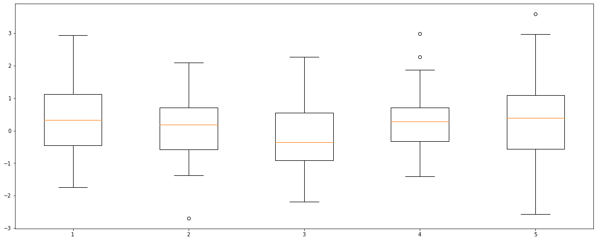
plt.figure(figsize=(20, 8))
plt.boxplot(((linear_fhat_temporal.reshape(40,5) - fiveVTS_test)).reshape(200,1)){'whiskers': [<matplotlib.lines.Line2D at 0x7fba306a1df0>,
<matplotlib.lines.Line2D at 0x7fba30184100>],
'caps': [<matplotlib.lines.Line2D at 0x7fba301843d0>,
<matplotlib.lines.Line2D at 0x7fba301846a0>],
'boxes': [<matplotlib.lines.Line2D at 0x7fba306a1af0>],
'medians': [<matplotlib.lines.Line2D at 0x7fba30184970>],
'fliers': [<matplotlib.lines.Line2D at 0x7fba30184c40>],
'means': []}
3) Spatio \(\to\) ST-GCN
w=np.zeros((N,N))for i in range(N):
for j in range(N):
if i==j :
w[i,j] = 0
elif np.abs(i-j) <= 1 :
w[i,j] = 1d = np.array(w.sum(axis=1))
D = np.diag(d)
L = np.array(np.diag(1/np.sqrt(d)) @ (D-w) @ np.diag(1/np.sqrt(d)))
lamb, Psi = np.linalg.eigh(L)
Lamb = np.diag(lamb)
fhatbar = Psi @ linear_fhat_fiveVTS.reshape(N,159)
power = fhatbar**2
ebayesthresh = importr('EbayesThresh').ebayesthresh
power_threshed=np.array([np.array(ebayesthresh(FloatVector(fhatbar[i]**2))) for i in range(N)])
fhatbar_threshed = np.where(power_threshed>0,fhatbar,0)
fhatbarhat = Psi @ fhatbar_threshed
fhatbarhat_linear_spatio = fhatbarhat.reshape(159,-1)ST-GCN만 한 상태에서 true값과 비교
linear_spatio = torch.tensor(fhatbarhat_linear_spatio).reshape(159,5,1).float()linear_X_spatio = linear_spatio[:158,:,:]
linear_y_spatio = linear_spatio[1:,:,:]model = RecurrentGCN(node_features=1, filters=4)
optimizer = torch.optim.Adam(model.parameters(), lr=0.01)
model.train()
for epoch in tqdm(range(50)):
for time, (xt,yt) in enumerate(zip(linear_X_spatio,linear_y_spatio)):
y_hat = model(xt, edge_index, edge_attr)
cost = torch.mean((y_hat-yt)**2)
cost.backward()
optimizer.step()
optimizer.zero_grad()100%|██████████| 50/50 [00:27<00:00, 1.85it/s]linear_X_spatio_fore = linear_spatio[119:,:,:]linear_fhat_spatio = torch.stack([model(xt, edge_index, edge_attr) for xt in linear_X_spatio_fore]).detach().numpy()(linear_fhat_spatio.reshape(40,5)[1] - fiveVTS_test[1])array([ 0.36965964, 0.57035639, -2.31763076, -1.40237264, 0.00630998])plt.figure(figsize=(20, 8))
plt.boxplot((linear_fhat_spatio.reshape(40,5) - fiveVTS_test)){'whiskers': [<matplotlib.lines.Line2D at 0x7fba281aba60>,
<matplotlib.lines.Line2D at 0x7fba281abd30>,
<matplotlib.lines.Line2D at 0x7fba281bae50>,
<matplotlib.lines.Line2D at 0x7fba281c5160>,
<matplotlib.lines.Line2D at 0x7fba281cf280>,
<matplotlib.lines.Line2D at 0x7fba281cf550>,
<matplotlib.lines.Line2D at 0x7fba281e0670>,
<matplotlib.lines.Line2D at 0x7fba281e0940>,
<matplotlib.lines.Line2D at 0x7fba2816ba60>,
<matplotlib.lines.Line2D at 0x7fba2816bd30>],
'caps': [<matplotlib.lines.Line2D at 0x7fba281ba040>,
<matplotlib.lines.Line2D at 0x7fba281ba310>,
<matplotlib.lines.Line2D at 0x7fba281c5430>,
<matplotlib.lines.Line2D at 0x7fba281c5700>,
<matplotlib.lines.Line2D at 0x7fba281cf820>,
<matplotlib.lines.Line2D at 0x7fba281cfaf0>,
<matplotlib.lines.Line2D at 0x7fba281e0c10>,
<matplotlib.lines.Line2D at 0x7fba281e0ee0>,
<matplotlib.lines.Line2D at 0x7fba2817a040>,
<matplotlib.lines.Line2D at 0x7fba2817a310>],
'boxes': [<matplotlib.lines.Line2D at 0x7fba281ab880>,
<matplotlib.lines.Line2D at 0x7fba281bab80>,
<matplotlib.lines.Line2D at 0x7fba281c5f70>,
<matplotlib.lines.Line2D at 0x7fba281e03a0>,
<matplotlib.lines.Line2D at 0x7fba2816b790>],
'medians': [<matplotlib.lines.Line2D at 0x7fba281ba5e0>,
<matplotlib.lines.Line2D at 0x7fba281c59d0>,
<matplotlib.lines.Line2D at 0x7fba281cfdc0>,
<matplotlib.lines.Line2D at 0x7fba2816b1f0>,
<matplotlib.lines.Line2D at 0x7fba2817a5e0>],
'fliers': [<matplotlib.lines.Line2D at 0x7fba281ba8b0>,
<matplotlib.lines.Line2D at 0x7fba281c5ca0>,
<matplotlib.lines.Line2D at 0x7fba281e00d0>,
<matplotlib.lines.Line2D at 0x7fba2816b4c0>,
<matplotlib.lines.Line2D at 0x7fba2817a8b0>],
'means': []}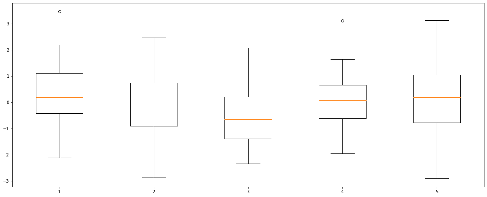
plt.figure(figsize=(20, 8))
plt.boxplot(((linear_fhat_spatio.reshape(40,5) - fiveVTS_test)).reshape(200,1)){'whiskers': [<matplotlib.lines.Line2D at 0x7fba281657c0>,
<matplotlib.lines.Line2D at 0x7fba28165a90>],
'caps': [<matplotlib.lines.Line2D at 0x7fba28165d60>,
<matplotlib.lines.Line2D at 0x7fba280f2070>],
'boxes': [<matplotlib.lines.Line2D at 0x7fba28158310>],
'medians': [<matplotlib.lines.Line2D at 0x7fba280f2340>],
'fliers': [<matplotlib.lines.Line2D at 0x7fba280f2610>],
'means': []}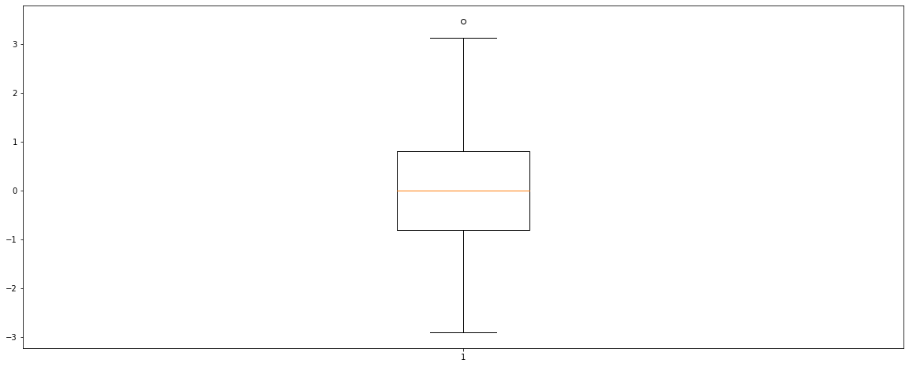
4) Spatio-Temporal \(\to\) ST-GCN
w=np.zeros((159*N,159*N))for i in range(159*N):
for j in range(159*N):
if i==j :
w[i,j] = 0
elif np.abs(i-j) <= 1 :
w[i,j] = 1d = np.array(w.sum(axis=1))
D = np.diag(d)
L = np.array(np.diag(1/np.sqrt(d)) @ (D-w) @ np.diag(1/np.sqrt(d)))
lamb, Psi = np.linalg.eigh(L)
Lamb = np.diag(lamb)
fhatbar = Psi @ linear_fhat_fiveVTS.reshape(159*N,1)
power = fhatbar**2
ebayesthresh = importr('EbayesThresh').ebayesthresh
power_threshed=np.array([np.array(ebayesthresh(FloatVector(fhatbar[i]**2))) for i in range(159*N)])
fhatbar_threshed = np.where(power_threshed>0,fhatbar,0)
fhatbarhat = Psi @ fhatbar_threshed
fhatbarhat_linear_spatio_temporal = fhatbarhat.reshape(159,N,1)ST-GCN만 한 상태에서 true값과 비교
linear_spatio_temporal = torch.tensor(fhatbarhat_linear_spatio_temporal).reshape(159,5,1).float()linear_X_spatio_temporal = linear_spatio_temporal[:158,:,:]
linear_y_spatio_temporal = linear_spatio_temporal[1:,:,:]model = RecurrentGCN(node_features=1, filters=4)
optimizer = torch.optim.Adam(model.parameters(), lr=0.01)
model.train()
for epoch in tqdm(range(50)):
for time, (xt,yt) in enumerate(zip(linear_X_spatio_temporal,linear_y_spatio_temporal)):
y_hat = model(xt, edge_index, edge_attr)
cost = torch.mean((y_hat-yt)**2)
cost.backward()
optimizer.step()
optimizer.zero_grad()100%|██████████| 50/50 [00:27<00:00, 1.84it/s]linear_X_spatio_temporal_fore = linear_spatio_temporal[119:,:,:]linear_fhat_spatio_temporal = torch.stack([model(xt, edge_index, edge_attr) for xt in linear_X_spatio_temporal_fore]).detach().numpy()fiveVTS_test.shape(40, 5)(linear_fhat_spatio_temporal.reshape(40,5)[1] - fiveVTS_test[1])array([ 0.70990738, 0.93671374, -1.24731856, -0.99082219, 0.35342387])plt.figure(figsize=(20, 8))
plt.boxplot((linear_fhat_spatio_temporal.reshape(40,5) - fiveVTS_test)){'whiskers': [<matplotlib.lines.Line2D at 0x7fba13089a30>,
<matplotlib.lines.Line2D at 0x7fba13089d00>,
<matplotlib.lines.Line2D at 0x7fba1309be50>,
<matplotlib.lines.Line2D at 0x7fba13029160>,
<matplotlib.lines.Line2D at 0x7fba13034280>,
<matplotlib.lines.Line2D at 0x7fba13034550>,
<matplotlib.lines.Line2D at 0x7fba13043670>,
<matplotlib.lines.Line2D at 0x7fba13043940>,
<matplotlib.lines.Line2D at 0x7fba1304fa60>,
<matplotlib.lines.Line2D at 0x7fba1304fd30>],
'caps': [<matplotlib.lines.Line2D at 0x7fba1309b040>,
<matplotlib.lines.Line2D at 0x7fba1309b310>,
<matplotlib.lines.Line2D at 0x7fba13029430>,
<matplotlib.lines.Line2D at 0x7fba13029700>,
<matplotlib.lines.Line2D at 0x7fba13034820>,
<matplotlib.lines.Line2D at 0x7fba13034af0>,
<matplotlib.lines.Line2D at 0x7fba13043c10>,
<matplotlib.lines.Line2D at 0x7fba13043ee0>,
<matplotlib.lines.Line2D at 0x7fba1305e040>,
<matplotlib.lines.Line2D at 0x7fba1305e310>],
'boxes': [<matplotlib.lines.Line2D at 0x7fba13089760>,
<matplotlib.lines.Line2D at 0x7fba1309bb80>,
<matplotlib.lines.Line2D at 0x7fba13029f70>,
<matplotlib.lines.Line2D at 0x7fba130433a0>,
<matplotlib.lines.Line2D at 0x7fba1304f790>],
'medians': [<matplotlib.lines.Line2D at 0x7fba1309b5e0>,
<matplotlib.lines.Line2D at 0x7fba130299d0>,
<matplotlib.lines.Line2D at 0x7fba13034dc0>,
<matplotlib.lines.Line2D at 0x7fba1304f1f0>,
<matplotlib.lines.Line2D at 0x7fba1305e5e0>],
'fliers': [<matplotlib.lines.Line2D at 0x7fba1309b8b0>,
<matplotlib.lines.Line2D at 0x7fba13029ca0>,
<matplotlib.lines.Line2D at 0x7fba130430d0>,
<matplotlib.lines.Line2D at 0x7fba1304f4c0>,
<matplotlib.lines.Line2D at 0x7fba1305e8b0>],
'means': []}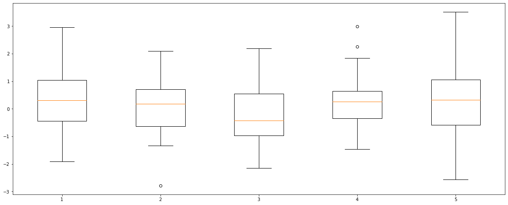
plt.figure(figsize=(20, 8))
plt.boxplot(((linear_fhat_spatio_temporal.reshape(40,5) - fiveVTS_test)).reshape(200,1)){'whiskers': [<matplotlib.lines.Line2D at 0x7fba130ab7c0>,
<matplotlib.lines.Line2D at 0x7fba130aba90>],
'caps': [<matplotlib.lines.Line2D at 0x7fba130abd60>,
<matplotlib.lines.Line2D at 0x7fba130b8070>],
'boxes': [<matplotlib.lines.Line2D at 0x7fba130ab610>],
'medians': [<matplotlib.lines.Line2D at 0x7fba130b8340>],
'fliers': [<matplotlib.lines.Line2D at 0x7fba130b8610>],
'means': []}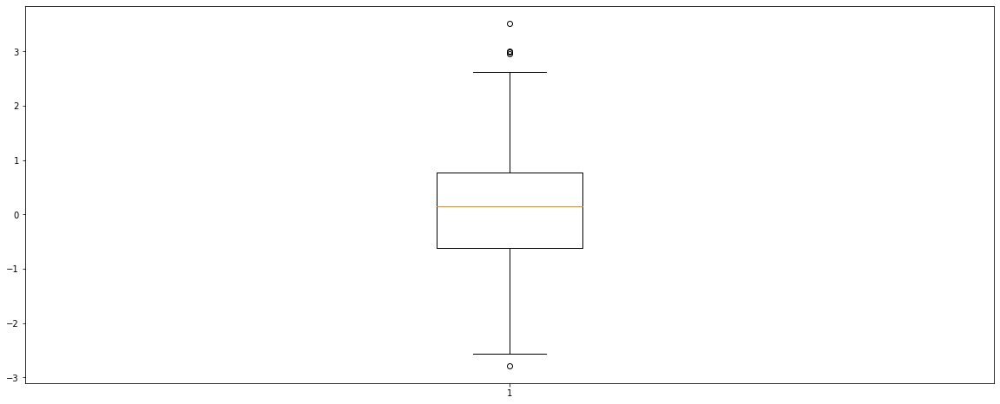
GNAR
mean
%R -i fiveVTS_train_mean%%R
meanprediction <- predict(GNARfit(vts = fiveVTS_train_mean[1:160,], net = fiveNet, alphaOrder = 2, betaOrder = c(1, 1)),n.ahead=40)%R -o meanpredictionsum((meanprediction.reshape(40,5)[1] - fiveVTS_test[1])**2)3.8828590908470577plt.figure(figsize=(20, 8))
plt.boxplot((meanprediction.reshape(40,5) - fiveVTS_test)){'whiskers': [<matplotlib.lines.Line2D at 0x7fba1030bee0>,
<matplotlib.lines.Line2D at 0x7fba1031f1f0>,
<matplotlib.lines.Line2D at 0x7fba10329310>,
<matplotlib.lines.Line2D at 0x7fba103295e0>,
<matplotlib.lines.Line2D at 0x7fba102b9700>,
<matplotlib.lines.Line2D at 0x7fba102b99d0>,
<matplotlib.lines.Line2D at 0x7fba102c6af0>,
<matplotlib.lines.Line2D at 0x7fba102c6dc0>,
<matplotlib.lines.Line2D at 0x7fba102d5ee0>,
<matplotlib.lines.Line2D at 0x7fba102e21f0>],
'caps': [<matplotlib.lines.Line2D at 0x7fba1031f4c0>,
<matplotlib.lines.Line2D at 0x7fba1031f790>,
<matplotlib.lines.Line2D at 0x7fba103298b0>,
<matplotlib.lines.Line2D at 0x7fba10329b80>,
<matplotlib.lines.Line2D at 0x7fba102b9ca0>,
<matplotlib.lines.Line2D at 0x7fba102b9f70>,
<matplotlib.lines.Line2D at 0x7fba102d50d0>,
<matplotlib.lines.Line2D at 0x7fba102d53a0>,
<matplotlib.lines.Line2D at 0x7fba102e24c0>,
<matplotlib.lines.Line2D at 0x7fba102e2790>],
'boxes': [<matplotlib.lines.Line2D at 0x7fba1030bd30>,
<matplotlib.lines.Line2D at 0x7fba10329040>,
<matplotlib.lines.Line2D at 0x7fba102b9430>,
<matplotlib.lines.Line2D at 0x7fba102c6820>,
<matplotlib.lines.Line2D at 0x7fba102d5c10>],
'medians': [<matplotlib.lines.Line2D at 0x7fba1031fa60>,
<matplotlib.lines.Line2D at 0x7fba10329e50>,
<matplotlib.lines.Line2D at 0x7fba102c6280>,
<matplotlib.lines.Line2D at 0x7fba102d5670>,
<matplotlib.lines.Line2D at 0x7fba102e2a60>],
'fliers': [<matplotlib.lines.Line2D at 0x7fba1031fd30>,
<matplotlib.lines.Line2D at 0x7fba102b9160>,
<matplotlib.lines.Line2D at 0x7fba102c6550>,
<matplotlib.lines.Line2D at 0x7fba102d5940>,
<matplotlib.lines.Line2D at 0x7fba102e2d30>],
'means': []}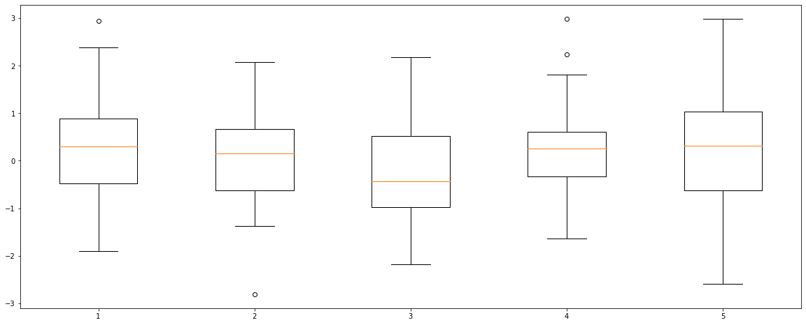
plt.figure(figsize=(20, 8))
plt.boxplot(((meanprediction.reshape(40,5) - fiveVTS_test)).reshape(200,1)){'whiskers': [<matplotlib.lines.Line2D at 0x7fba102544c0>,
<matplotlib.lines.Line2D at 0x7fba102547c0>],
'caps': [<matplotlib.lines.Line2D at 0x7fba10254a90>,
<matplotlib.lines.Line2D at 0x7fba10254d60>],
'boxes': [<matplotlib.lines.Line2D at 0x7fba10245040>],
'medians': [<matplotlib.lines.Line2D at 0x7fba10260070>],
'fliers': [<matplotlib.lines.Line2D at 0x7fba10260340>],
'means': []}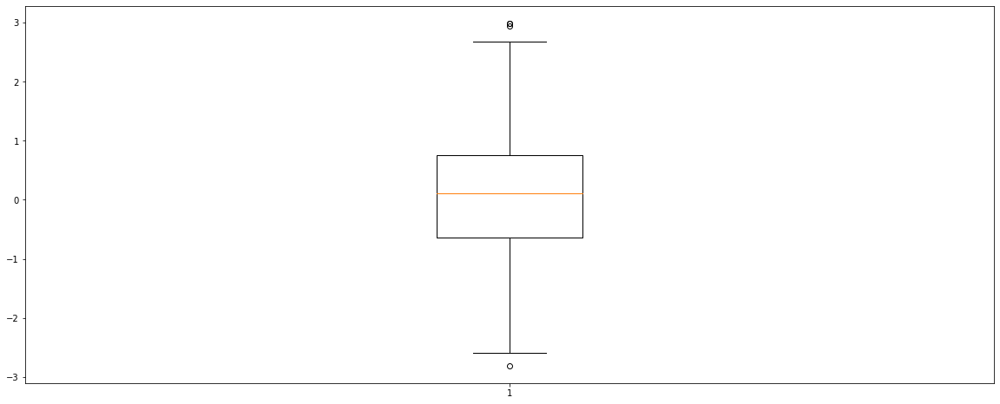